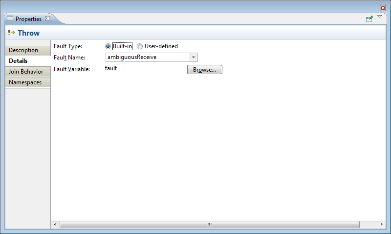

Throw
The Throw activity will invoke a fault handler in an enclosing Scope activity. Throw requires the name of either a standard BPEL fault, or the name of a user-defined fault message. A variable is used to hold the value of the fault data.